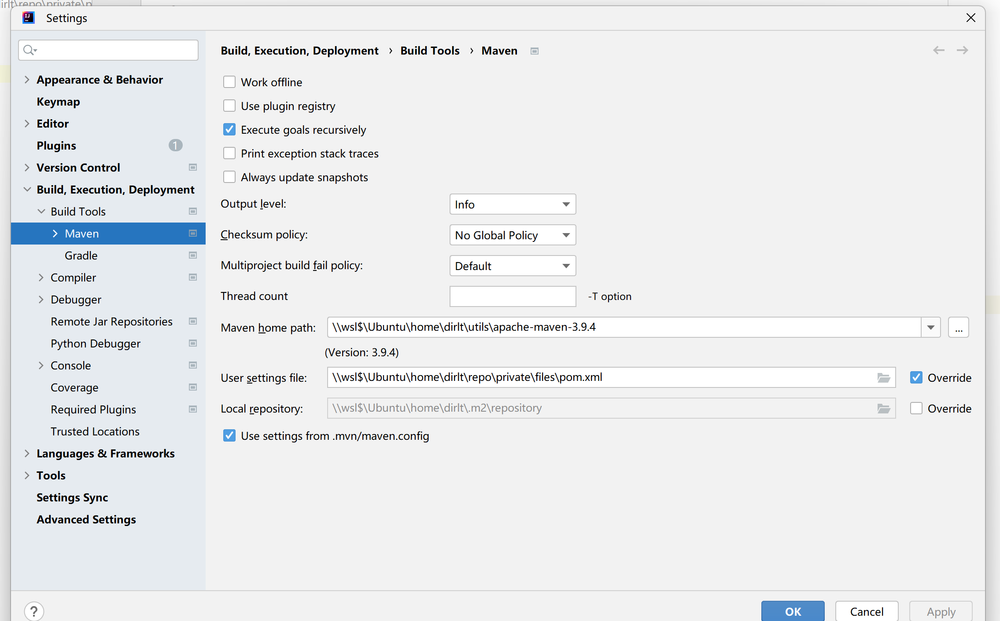

尝试迁移到Windows上
Table of Contents
1. WSL的问题
虽然上面有了WSL，但是这个东西和Windows本身的交互性并不是很好。比如wsl里面的目录不能被obsidian识别（打开的时候会出现ELSDIR这样的错误），WSL是独立的网络空间使用ssh tunnel在Windows里面是看不到的等等这些问题。稍微令人欣慰的就是intellij WSL支持的不错，Java项目可以使用WSL里面的JDK以及配置，但是python这个不行。这个也可以理解，毕竟linux和windows下面的python二进制差别还蛮大的。
2. MSYS2的问题
为了解决ssh tunnel这个问题，可以安装一个 MSYS2 。这个东西和cygwin很像，可以在windows环境下面提供linux环境，以及提供各种linux命令等等。最常用的就是git/ssh这类。安装完了之后可以在windows terminal里面配置这个shell，可以配置使用zsh作为默认的shell.
{
"commandline": "C:/msys64/msys2_shell.cmd -defterm -here -no-start -ucrt64 -shell zsh",
"guid": "{17da3cac-b318-431e-8a3e-7fcdefe6d114}",
"icon": "C:/msys64/ucrt64.ico",
"name": "UCRT64 / MSYS2",
"startingDirectory": "C:/msys64/home/%USERNAME%"
}
为了在msys2里面使用linux软链接，需要稍微修改一下msys2_shell.cmd里面的内容。
rem To activate windows native symlinks uncomment next line set MSYS=winsymlinks:nativestrict
另外需要在shell下面增加一个环境变量
export MSYS=winsymlinks:lnk
这个东西确实好，在下面使用ssh以及git没有啥问题，然后用obsidian也可以打开下面的工程。一个大问题就是使用zsh的时候，在某个git仓库下面操作会卡住，不知道是为什么，在bash下面就没有这个问题。考虑到后面再这个环境下工作时间不多（大部分应该都是在WSL下面），或许可能用bash还是好点。
3. Intellij的问题
打开WSL环境下面的Java项目没啥问题，甚至还可以使用WSL里面的JDK，这个真的是太方便了。遇到的唯一问题就是，maven的settings.xml文件我使用的是WSL下面的软链接，这个intellij没有识别，需要使用WSL下面的真实路径。

WSL下面的Python项目稍微有点麻烦，大致是两个问题：
- 没有办法发现WSL下面的Python环境，只能使用Windows下面的Python环境。这个可以理解，毕竟Windows/Linux下面的Python二进制差别是非常大的。
- 在Intellij下面，WSL的Python项目没有办法发现即使是Windows下面的Python环境。
最终的结果就是，在Intellij下面没有办法同时跑Java/Python项目，这个在Mac下面是可行的。为了跑Python项目，还是要安装一个PyCharm. 另外就是需要安装一个Windows Python环境。
4. Miniconda3
在Windows下面安装Python环境，最简单的方法估计就是使用miniconda3了。安装好了之后，PyCharm就可以自动发现这个python sdk, 并且可以在pycharm下面创建virtualenv. 然后为了方便切换到某个环境，可以在windows terminal下面配置profile, 这样可以方便地切换环境。
{
"commandline": "powershell.exe -ExecutionPolicy ByPass -NoExit -Command \"& '%USERPROFILE%\\miniconda3\\shell\\condabin\\conda-hook.ps1' ; conda activate '%USERPROFILE%\\miniconda3' \" ",
"guid": "{2daaf818-fbab-47e8-b8ba-2f82eb89de40}",
"hidden": false,
"icon": "%USERPROFILE%\\miniconda3\\Menu\\Iconleak-Atrous-PSConsole.ico",
"name": "Anaconda Prompt",
"startingDirectory": "%USERPROFILE%"
},
{
"commandline": "powershell.exe -ExecutionPolicy ByPass -NoExit -Command \"& '%USERPROFILE%\\miniconda3\\shell\\condabin\\conda-hook.ps1' ; conda activate project \" ",
"guid": "{2daaf818-fbab-47e8-b8ba-2f82eb89de41}",
"hidden": false,
"icon": "%USERPROFILE%\\miniconda3\\Menu\\Iconleak-Atrous-PSConsole.ico",
"name": "Anaconda Prompt -> Project",
"startingDirectory": "%USERPROFILE%"
}
5. 快捷键冲突
Win 10 Ctrl + Shift + F快捷键占用-百度经验
几个输入法会将一些快捷键全局修改掉，比如 "Ctrl+Shift+F" 这个，在Intellij/VSCode下面特别有用，但是都被映射走了。如果对输入法要求比较低的话，那么可以将输入法的快捷键全部禁掉。其实这个问题也不仅仅是Windows下面的，Mac下面也有。
快捷键这个东西我差不多被折腾够了。原来想在Windows和Mac上保持一套快捷键，看来这个东西有点不太现实。VSCode也有同步配置这个功能，但是好像这个同步配置也区分不同的操作系统，因为快捷键配置差异有点太大了。
目前我的感受是，最大的问题来自于cmd和alt这两个按键。windows不太喜欢你用cmd, 一旦使用cmd这个按键那么通常会触发windows本身的某些行为。但是mac却很喜欢你使用cmd, 各种快捷键都是以cmd开头。最简单的例子就是切换窗口， windows下面是alt+tab, 而mac却是cmd+tab.
把这个搞清楚之后，mac键盘和pc键盘也有差异：pc键盘最下面从左往右是ctrl, cmd, alt. 而mac则是ctrl, option, cmd. 我们可以简单地认为alt = option. 但是cmd所在的位置是不同的。所以在mac上如果安装了pc键盘，通常需要调整一下映射关系，否则使用起来也挺难受的。幸好mac本身设置上就支持键盘的modifier keys进行映射，我则是安装了一些其他的按键映射软件来解决。